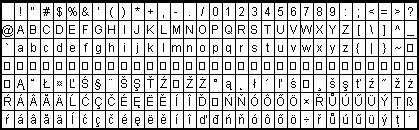

|
1. Введение
Данная статья представляет собой переработанный вариант HOWTO, который я
написал ранее. Переработка потребовалась потому, что в KDE 2.0 больше нет
утилиты KIKBD, а XFree86 4.x обработывает определения клавиш ISO8859-2
лучше, чем более старые версии. Речь пойдет только о настройке клавиатуры
с помощью Xmodmap, а не XKB.
[Замечание: Эта статья описывает только настройку XFree86
версии 4.х, которой может не быть в дистрибутиве, которым Вы
пользуетесь. Редактор]
1.2 С чего начать
Создайте собственный файл .Xmodmap в соответствии с инструкциями
ниже.
В файл .bash_profile, находящийся в Вашей личной директории ~/ нужно
добавить строки: export LANG=language
export LC_ALL=language
где "language" соответствует языку, который Вы собираетесь
использовать. Соответствующее значение для каждого языка можно найти в
файле locale.alias в /usr/X11R6/lib/X11/locale. В консоли выполниете
команду "exit" и снова войдите в систему для того, чтобы bash перечитал
~/.bash_profile.
Установите шрифты (для чешского или словацкого языка лучше подойдут
шрифты ISO8859-2 Type 1) и укажите путь к ним в Вашем файле XF86Config.
Запустите Х сервер.
Обратите внимание, что текстовый редактор из KDE 2.0 иногда не выводит
шрифты ISO8859-2 даже если Вы указали путь к ним. Создается впечатление,
что команда "Latin2" просто не работает. Установите другой базовый
текстовый редактор, в котором можно ВЫБИРАТЬ шрифты (подойдет kedit
от старого KDE). Вызвав с помощью меню соответствующий диалог выберите
кодировку ISO8859-2.
В окне терминала выполните команду "xmodmap ~/.Xmodmap" для того, чтобы
система перечитала настройки Xmodmap.
Переключайте клавиатуру в свое удовольствие.
Настройка международной клавиатуры с помощью XKB не рассматривается
подробно, но упоминается, как относящаяся к проблемам интернализации.
XKB и XMODMAP независимы друг от друга, поэтому Вы можете
отредактировать файл /etc/X11/XF86Config так, как это описано в
Danish-HOWTO или выполнить команду в окне X терминала (для Словацкой
клавиатуры): setxkbmap -model pc102 -symbols 'czsk(us_sk_qwertz)' setxkbmap cs -option grp:shift_toggle
Параметр "grp:shift_toggle" определяет способ изменения раскладки.
Можно также написать Option "XkbOptions" "grp:ctrl_shift_toggle"
в файле XF86Config, в этом случае переключение будет осуществлятся
одновременным нажатием клавиш Ctrl и Shift.
Сведения о других языках ищите в файле symbols.dir в каталоге
/usr/X11R6/lib/X11/xkb. Имейте в виду, что некоторые символы имеются
только в исходном коде, а не в двоичных файлах.
Как видите, не все так просто. И все покажется еще сложнее, когда Вы
обнаружите, что многие клавиатурные раскладки не входят в стандартную
откомпилированную поставку XFree86, хотя их и можно найти в исходных
текстах. Утилита kikbd изъята из KDE 2.0, а документация явно
недостаточна. Хотелось бы просто запустить KDE, изменить настройки
международной клавиатуры и немедленно начать набирать тексты на выбранном
языке (это возможно для немецкого и некоторых других языков, но в
восточно-европейских клавиатурах есть буквы, которые не работают).
Более того, Вы не обнаружите Хорватской или Македонской клавиатур в
выводе комманды "kcmshell Personaization/kcmlayout" из KDE 2.0. Зато там
есть Чехословацкая клавиатура, хотя самой страны Чехословакии больше нет,
а пользователям трудно понять, как указать в настройках чешский или
словацкий языки по отдельности.
Некоторые оконные менеджеры заменяют установки .Xmodmap своими. Когда
установки .Xmodmap не срабатывают, правильным будет заставить систему
перечитать их из Вашего личного каталога. Запустите в X-терминале команду:
xmodmap ~/.Xmodmap
После установки словацкой клавиатуры в KDE, указав в файле .Xmodmap
стандартные определения кодов ISO8859-2, я так и не смог набирать
словацкие или чешские тексты. Но про то, как решить эту проблему я все
объяснил в HOWTO, опубликованном в Linux Gazette ранее. В последних
версиях XFree86 больше нет нужды прибегать к этому эксперементальному
способу.
2. Настройка международной клавиатуры X Windows с помощью
Xmodmap
В общем и целом так:
1. Стандартный способ, в котором используются стандартные названия
символов (scaron для буквы 'S' с "короной" наверху, uacute для ú - u со
знаком "острого" ударения).
2. Экспериментальный способ, в котором имена некоторых символов из
набора ISO8859-1 используются, например, для получения scaron.
Введите в свой Bash_profile: export LC_ALL=language
export LANG=language
Или: export LC_CTYPE=SK_SK
export LC_ALL=SK_SK
OR for csh shell
setenv LC_ALL=language
setenv LANG=language
и поместите неизмененный стандартный файл .Xmodmap в свою личную папку.
На вопрос, где можно получить этот самый "стандартный" файл, я отвечу так
-- загляните в GNOME'овскую директорию ../share. Файл
/usr/X11R6/lib/X11/locale/locale.alias содержит алиасы для языков, так что
можете посмотреть там, что означает ca_ES или br_FR и каков точный
синтаксис для Вашего языка (нельзя просто написать "croatia", а надо
написать "croatian", но ни в коем случае не "Croatian" -- очень важный
момент, т.к. система Unix чувствительна к регистру символов).
Теперь нужно установить подходящий для выбранного языка шрифт и
записать путь к нему в файле XF86Config. Если Вы хотите
"интернационализировать" вашу клавиатуру, установите в первую очередь
стандартные определения из Xmodmap и пользуйтесь правой клавишей Alt для
переключения раскладок (если Вы используете Xmodmap из GNOME). Если не
заработает, попробуйте следующее:
Если в KDE или GNOME установленный файл .Xmodmap не работает, надо
заставить систему заново прочесть указанные в нем установки с помощью
команды "xmodmap
~/.Xmodmap", так, как описано в предыдущем разделе. В качестве
альтернативы, можно создать 60 Xmodmap-файлов с именами наподобие .Xmo1,
.Xmo2, .Xmo3, .Xmo4 и т.д., и вынудить систему перечитать их (xmodmap /.Xmo1). Точка перед
именем файла озночает, что это скрытый файл и не является обезательной.
Вполне допустимо пользоваться файлами Xmodmap с именами xmo1, xmo2 или
xmo3.
Печатать с национальной раскладкой можно только в приложениях, которые
имеют доступ к шрифтам в кодировке ISO8859-2 (или другим
необходимым шрифтам), но этого может оказаться недостаточным для
StarOffice или друх приложений, использующих собственные встроеные шрифты.
StarOffice использует собственную директорию для шрифтов --
StarOffice/share/xp3/fontmedtrcs/afm для шрифтов afm и
StarOffice/share/xp3/pssoftfonts для шрифтов ps. Так что придется добавить
шрифты ISO8859-2 в эти директории (чтобы StarOffice понял, что их надо
использовать) и добавить символические ссылки в файл fonts.dir. Попробуйте
скрипт, который я приготовил. Переименуйте его в "so52", сделайте его
выполнимым (chmod +x so52), скопируйте в каталог StarOffice/share/xp3 и
запустите оттуда.
StarOffice 5.2 полноценно распознает документы Word 97, даже написанные
на разных языках, но для более старых версий или других текстовых
редакторов необходима предварительная конвертация из iso8859-2 в win1250.
Таким образом, профессиональные переводчики могут с помощью StarOffice
5.2 работать с несколькими языками и экспортировать результаты работы в
формат MS Word 97 или rtf.
Наборы символов
Следующая информация должна помочь Вам правильно задать раскладку
клавиатуру в файле .Xmodmap для работы со шрифтами iso8859-2 или любыми
другими. Ниже приводится кодовая таблица ISO-8859-1 для того, чтобы Вы
могли найти правильные имена символов. Большая часть этой иформации
пригодится для построения клавиатурной раскладки для "чистой" кодовой
таблицы ISO-8859-1 или для комбинации восточно-европейских символов с
западно-европейскими. Если Вам нужны языки, использующие другие, не
центрально-европейские и западно-европейские кодовые таблицы,
соответствующие таблицы для нужных кодовых страниц ISO*** можно найти в
Интернет. В RedHat файл /usr/include/gdk/gdkkeysyms.h содержит все
специальные имена символов, которые мы здесь используем (помимо этого там
есть имена и для греческих символов).
Файл Xmodmap со стандартными определениями ISO8859-2
Это пример стандартного файла .Xmodmap с кодами символов от 0x31 по
0x33. Этот файл заставит X сервер корректно отображать символы lcaron,
scaron и т.д., если Вы пользуетесь последними версиями XFree86 и в Вашем
bash_profile правильные значения LC_LANG=language и LC-ALL=language.
Просто скопируйте текст ниже начиная с символа 0x31 по 0x33 в файл Xmodmap
из моей предыдущей публикации в Linux Gazette (удалите из него
экспериментальные определения кодов клавиш 0x31-0x33). [Здесь
можно найти текстовую версию] keycode 0x31 = grave asciitilde semicolon dead_diaeresis
keycode 0x0A = 1 exclam plus 1
keycode 0x0B = 2 at lcaron 2
keycode 0x0C = 3 numbersign scaron 3
keycode 0x0D = 4 dollar ccaron 4
keycode 0x0E = 5 percent tcaron 5
keycode 0x0F = 6 asciicircum scaron 6
keycode 0x10 = 7 ampersand yacute 7
keycode 0x11 = 8 asterisk aacute 8
keycode 0x12 = 9 parenleft iacute 9
keycode 0x13 = 0 parenright eacute 0
keycode 0x14 = minus underscore equal percent
keycode 0x15 = equal plus dead_acute dead_caron
keycode 0x33 = backslash bar ograve parenright
Эту таблицу можно использовать для построения Вашей
центрально-европейской раскладки клавиатуры для стандартного метода (через
Xmodmap)
"Корона" [caron] -- это перевернутый значок ^ над буквой.
Острое ударение [Acute] -- это маленький штрих на подобие косой черты /
над буквой (ú, обозначается uacute).
Диаерезис [diaeresis] (умляут) -- две точки .. над буквой.
Верхняя точка [dot] -- точка над буквой (как в zdot ż).
Рисунок объяснит лучше:

Если Вы хотите построть файл Xmodmap с кодовой таблицей ISO8859-1
для немецкой или датской раскладки, то придется выяснить правильные имена
для необходимых символов, если Вы с ними не знакомы.
Символьные примитивы [entities] в правой колонке нужны в Xmodmap для
определения восточно-европейской клавиатурной раскладки.
| Центрально-европейские
символы |
| Название символа |
Обозначение SGML и
Xmodmap |
|
Неразрывный пробел
NON-BREAKING SPACE |
nbsp |
Общий знак валюты
CURRENCY SIGN |
curren |
Пунктирная вертикальная черта
BROKEN
BAR |
brvbar |
Знак параграфа
SECTION SIGN |
sect |
Умляут или диаерезис
DIAERESIS |
uml |
Знак копирайта
COPYRIGHT SIGN |
copy |
Левая угловая кавычка
LEFT-POINTING
DOUBLE ANGLE QUOTATION MARK |
laquo |
Знак "не"
NOT SIGN |
not |
"Мягкий" программный перенос
SOFT HYPHEN
|
shy |
Зарегистрированный товарный
знак
REGISTERED SIGN |
reg |
Знак градуса
DEGREE SIGN |
deg |
Плюс/минус
PLUS-MINUS SIGN |
plusmn |
Острое ударение
ACUTE ACCENT |
acute |
Приставка "микро-" (греческая
"мю")
MICRO SIGN |
micro |
Знак абзаца
PILCROW SIGN |
para |
Средняя точка
MIDDLE DOT |
middot |
Седиль
CEDILLA |
cedil |
Правая угловая ковычка
RIGHT-POINTING
DOUBLE ANGLE QUOTATION MARK |
raquo |
Прописное латинское А с острым
ударением
LATIN CAPITAL LETTER A WITH ACUTE |
Aacute |
Прописное латинское А с
циркумфлексом
LATIN CAPITAL LETTER A WITH CIRCUMFLEX |
Acirc |
Прописное латинское А с диаерезисом,
А-умляут
LATIN CAPITAL LETTER A WITH DIAERESIS |
Auml |
Прописное латинское С с седилем
LATIN
CAPITAL LETTER C WITH CEDILLA |
Ccedil |
|
Прописное латинское Е с острым ударением
LATIN CAPITAL LETTER
E WITH ACUTE |
Eacute |
Прописное латинское Е с диаерезисом
(умляутом)
LATIN CAPITAL LETTER E WITH DIAERESIS |
Euml |
Прописное латинское I с острым
ударением
LATIN CAPITAL LETTER I WITH ACUTE |
Iacute |
Прописное латинское I с
циркумфлексом
LATIN CAPITAL LETTER I WITH CIRCUMFLEX |
Icirc |
Прописное латинское О с острым
ударением
LATIN CAPITAL LETTER O WITH ACUTE |
Oacute |
Прописное латинское О с
циркумфлексом
LATIN CAPITAL LETTER O WITH CIRCUMFLEX |
Ocirc |
Прописное латинское О с диаерезисом,
О-умляут
LATIN CAPITAL LETTER O WITH DIAERESIS |
Ouml |
Знак умножения
MULTIPLICATION SIGN |
times |
Прописное латинское U с острым
ударением
LATIN CAPITAL LETTER U WITH ACUTE |
Uacute |
Прописное латинское U с диаерезисом,
U-умляут
LATIN CAPITAL LETTER U WITH DIAERESIS |
Uuml |
Прописное латинское Y с острым
ударением
LATIN CAPITAL LETTER Y WITH ACUTE |
Yacute |
Строчная немецкая лигатура Эс-цет
(SZ)
LATIN SMALL LETTER SHARP S |
szlig |
Строчное латинское а с острым
ударением
LATIN SMALL LETTER A WITH ACUTE |
aacute |
Строчное латинское а с
циркумфлексом
LATIN SMALL LETTER A WITH CIRCUMFLEX |
acirc |
Строчное латинское а с диаерезом, строчное
а-умляут
LATIN SMALL LETTER A WITH DIAERESIS |
auml |
Строчное латинское с с седилем
LATIN
SMALL LETTER C WITH CEDILLA |
ccedil |
Строчное латинское е с острым
ударением
LATIN SMALL LETTER E WITH ACUTE |
eacute |
Строчное латинское е с диаерезисом
LATIN
SMALL LETTER E WITH DIAERESIS |
euml |
Строчное латинское i с острым
ударением
LATIN SMALL LETTER I WITH ACUTE |
iacute |
Строчное латинское i с
циркумфлексом
LATIN SMALL LETTER I WITH CIRCUMFLEX |
icirc |
Строчное латинское о с острым
ударением
LATIN SMALL LETTER O WITH ACUTE |
oacute |
Строчное латинское о с
циркумфлексом
LATIN SMALL LETTER O WITH CIRCUMFLEX |
ocirc |
Строчное латинское о с диаерезисом,
строчное о-умляут
LATIN SMALL LETTER O WITH DIAERESIS |
ouml |
Знак деления
DIVISION SIGN |
divide |
Строчное латинское u с острым
ударением
LATIN SMALL LETTER U WITH ACUTE |
uacute |
Строчное латинское u с диаерезисом,
строчное u-умляут
LATIN SMALL LETTER U WITH DIAERESIS |
uuml |
Строчное латинское y с острым
ударением
LATIN SMALL LETTER Y WITH ACUTE |
yacute |
Прописное латинское А со значкм
"бреве"
LATIN CAPITAL LETTER A WITH BREVE |
Abreve |
Строчное латинское А со значком
"бреве"
LATIN SMALL LETTER A WITH BREVE |
abreve |
Прописное латинское А со значком
"огонек"
LATIN CAPITAL LETTER A WITH OGONEK |
Aogon |
Строчное латинское а со значком
"огонек"
LATIN SMALL LETTER A WITH OGONEK |
aogon |
Прописное латинское С с острым
ударением
LATIN CAPITAL LETTER C WITH ACUTE |
Cacute |
Строчное латинское с с отсрым
ударением
LATIN SMALL LETTER C WITH ACUTE |
cacute |
Прописное латинское С с "короной"
LATIN
CAPITAL LETTER C WITH CARON |
Ccaron |
Строчное латинское с с "короной"
LATIN
SMALL LETTER C WITH CARON |
ccaron |
Прописное латинское D с "короной"
LATIN
CAPITAL LETTER D WITH CARON |
Dcaron |
Строчное латинское d с "короной"
LATIN
SMALL LETTER D WITH CARON |
dcaron |
Прописное латинское
D-перечеркнутое
LATIN CAPITAL LETTER D WITH STROKE |
Dstrok |
Строчное латинское d-перечеркнутое
LATIN
SMALL LETTER D WITH STROKE |
dstrok |
Прописное латинское Е со значком
"огонек"
LATIN CAPITAL LETTER E WITH OGONEK |
Eogon |
Строчное латинское Е со значком
"огонек"
LATIN SMALL LETTER E WITH OGONEK |
eogon |
Прописное латинское Е с "короной"
LATIN
CAPITAL LETTER E WITH CARON |
Ecaron |
Строчное латинское е с "короной"
LATIN
SMALL LETTER E WITH CARON |
ecaron |
Прописное латинское L со значком острого
ударения
LATIN CAPITAL LETTER L WITH ACUTE |
Lacute |
Строчное латинское l со значком острого
ударения
LATIN SMALL LETTER L WITH ACUTE |
lacute |
Прописное латинская L с "короной"
LATIN
CAPITAL LETTER L WITH CARON |
Lcaron |
Строчное латинская l с "короной"
LATIN
SMALL LETTER L WITH CARON |
lcaron |
Прописное латинская
L-перечеркнутое
LATIN CAPITAL LETTER L WITH STROKE |
Lstrok |
Строчное латинская l-перечеркнутое
LATIN
SMALL LETTER L WITH STROKE |
lstrok |
Прописное латинское N со значком острого
ударения
LATIN CAPITAL LETTER N WITH ACUTE |
Nacute |
Строчное латинское n со значком острого
ударения
LATIN SMALL LETTER N WITH ACUTE |
nacute |
Прописное латинское N с "короной"
LATIN
CAPITAL LETTER N WITH CARON |
Ncaron |
Строчное латинское n с "короной"
LATIN
SMALL LETTER N WITH CARON |
ncaron |
Прописное латинское O с двойным острым
ударением
LATIN CAPITAL LETTER O WITH DOUBLE ACUTE |
Odblac |
Строчное латинское о с двойным острым
ударением
LATIN SMALL LETTER O WITH DOUBLE ACUTE |
odblac |
Прописное латинское R со значком острого
ударения
LATIN CAPITAL LETTER R WITH ACUTE |
Racute |
Строчное латинское r со значком острого
ударения
LATIN SMALL LETTER R WITH ACUTE |
racute |
Прописное латинское R с "короной"
LATIN
CAPITAL LETTER R WITH CARON |
Rcaron |
Строчное латинское r с "короной"
LATIN
SMALL LETTER R WITH CARON |
rcaron |
Прописное латинское S со значком острого
ударения
LATIN CAPITAL LETTER S WITH ACUTE |
Sacute |
Строчное латинское s со значком острого
ударения
LATIN SMALL LETTER S WITH ACUTE |
sacute |
Прописное латинское S с седилем
LATIN
CAPITAL LETTER S WITH CEDILLA |
Scedil |
Строчное латинское s с седилем
LATIN
SMALL LETTER S WITH CEDILLA |
scedil |
Прописное латинское S с "короной"
LATIN
CAPITAL LETTER S WITH CARON |
Scaron |
Строчное латинское s с "короной"
LATIN
SMALL LETTER S WITH CARON |
scaron |
Прописное латинское T с седилем
LATIN
CAPITAL LETTER T WITH CEDILLA |
Tcedil |
Строчное латинское t с седилем
LATIN
SMALL LETTER T WITH CEDILLA |
tcedil |
Прописное латинское T с "короной"
LATIN
CAPITAL LETTER T WITH CARON |
Tcaron |
Строчное латинское t с "короной"
LATIN
SMALL LETTER T WITH CARON |
tcaron |
Заглавное латинское U с кружком
наверху
LATIN CAPITAL LETTER U WITH RING ABOVE |
Uring |
Строчное латинское u с кружком
наверху
LATIN SMALL LETTER U WITH RING ABOVE |
uring |
Прописное латинское U с двойным острым
ударением
LATIN CAPITAL LETTER U WITH DOUBLE ACUTE |
Udblac |
Строчное латинское u с двойным острым
ударением
LATIN SMALL LETTER U WITH DOUBLE ACUTE |
udblac |
Прописное латинское Z с острым
ударением
LATIN CAPITAL LETTER Z WITH ACUTE |
Zacute |
Строчное латинское z с острым
ударением
LATIN SMALL LETTER Z WITH ACUTE |
zacute |
Прописное латинское Z с точкой
наверху
LATIN CAPITAL LETTER Z WITH DOT ABOVE |
Zdot |
Строчное латинское z с точкой
наверху
LATIN SMALL LETTER Z WITH DOT ABOVE |
zdot |
Прописное латинское Z с "короной"
LATIN
CAPITAL LETTER Z WITH CARON |
Zcaron |
Строчное латинское z с "короной"
LATIN
SMALL LETTER Z WITH CARON |
zcaron |
Значок "корона"
CARON |
caron |
Значок "бреве"
BREVE |
breve |
Верхняя точка
DOT ABOVE |
dot |
Значок "огонек"
OGONEK |
ogon |
Двойное острое ударение
DOUBLE ACUTE
ACCENT |
dblac |
3. Как Xmodmap работает в разных системах
Для GNOME это не важно, но для корректного использования шрифтов в
кодировке ISO8859-2 приложениями KDE 2.x необходимо изменить файл i18n
(/etc/sysconfig/i18n) как указано ниже:
RedHat:
LANG="sk_SK"
где"sk_SK" -- правильное обозначение нужного Вам языка.
Mandrake:
SYSFONT=lat0-sun16
LC_MONETARY=en_US
LC_CTYPE=cs_CZ
LC_NUMERIC=en_US
LC_MESSAGES=en_US
LANGUAGE=cs_CZ:cs
LC_TIME=en_US
RPM_INSTALL_LANG=en
LC_COLLATE=en_US
SYSFONTACM=iso15
LANG=sk
Для FreeBSD 4.2 следующим образом отредактируйте /etc/profile:
LANG=cs_CZ.ISO_8859-2; export
LANG
#чтобы писать по Чешски
LC_MESSAGES=en_US.ISO_8859-1;
export
LC_MESSAGES #
чтобы сообщения были по-английски.
В Mandrake или FreeBSD воспользуемся раскладкой "cs" из директории
/usr/X11R6/lib/X11/xkb/symbols/. Всегда можно воспользоваться методикой,
основанной на xmodmap, в качестве альтернативы можно изменить map-файл
соответствующим образом, заменив определения клавиш на свои собственные. В
KDE 2.x помимо этого требуется выбрать кодовую таблицу iso8859-2 (или
другую подходящую) в меню Personalization > Country and Language.
Только после этого шрифты ISO8859-2 будут верно отоброжаться в
приложениях, написанных для KDE. В этом отношении GNOME будет
подружелюбнее.
Следующее относится к случаю. когда файл i18n отстался
неизмененным.
3.1 SuSe 7.0 с XFree86 3.3.6 и KDE 2.0
Можно воспользоваться файлом Xmodmap со стандартными определениями
клавиш для кодировки ISO8859-2 ("scaron" вместо "threequarters" и т.д.). К
сожалению, хотя Вы и сможете немедленно набирать текст в ISO8859-2, dead
keys (Прим. переводчика dead keys -- это клавиши, которые сами
по себе не соответствуют никакому символу, а служат для добавления
диакретичекских знаков к символу, клавиша для которого будет нажата
следующей.:-() работать не будут и команда export LANG=language в этой
ситуации не поможет.
После копирования файла Compose из /usr/X11R6/lib/X11/locale/iso8859-2/
в /usr/X11R6/lib/X11/locale/iso8859-1/, dead keys начнут работать даже с
некоторой элегантностью. В StarOffice 5.2 это тоже проверено. FontPath
нужно изменить в /etc/XF86Config, а не в /etc/X11/Xf86Config. Если шрифты
ISO8859-2 указать в FontPath в /etc/X11/Xf86Config, StarOffice может их не
увидеть. При работе со StarOffice ни в коем случаем нельзя пользоваться
шрифтами из самого StarOffice, вместо этого должны использоваться шрифты
из директории ../ISO8859-2 (они появятся в меню шрифтов автоматически
после выполнения скрипта, приведенного выше).
Ниже приводится секция FontPath для шрифтов ISO8859-2 из файла
/etc/XF86Config в моей установке SuSE 7.0:
FontPath "/usr/X11R6/lib/X11/fonts/ISO8859-2/Type1"
FontPath "/usr/X11R6/lib/X11/fonts/ISO8859-2/Type1/afm"
FontPath "/usr/X11R6/lib/X11/fonts/ISO8859-2/Type1/pfm"
3.2 SuSE 7.0 with XFree86 version 3.3.6 and KDE 1.x
Также как и в случае KDE 2.0.
3.3 Mandrake Linux 7.2 с XFree86 версии 4.x
Правильно установленные опции LANG=language и LC_ALL=langauge в Вашем
bash_profile уже достаточны (но не для приложений KDE 2.x). Стандартный
прием с использованием кодов клавиш в .Xmodmap (scaron, lcaron, not
"threequarters" or "mu", etc.) и исполнение команды: "xmodmap
/.Xmodmap" позволит Вам переключать клавиатуру клавишей Scroll Lock (если
Вы используете мой файл Xmodmap; в случае другого файла Xmodmap попробуйте
правый Alt или другие клавиши, в соответвтсвии с тем, что определено в
файле Xmodmap).
Установка FontPath в /etc/X11/XF86Config и /etc/X11/XF86Config менять
не нужно:
FontPath "unix/:1"
XFree86 прочтет Ваши новые ISO8859-2 шрифты автоматически из директории
/usr/share/fonts (как и в RedHat). Просто удивительно, что нет нужды
копировать файл ../ISO8859-2/Compose в директорию ../ISO8859-1 для того,
чтобы заработали dead keys. Для использования шрифтов ISO8859-2 с
приложениями KDE 2.0 измените файл i18n как указано выше.
3.4 RedHat 6.0, 6.1 и 6.2 (старые версии XFree86)
В этом случае будет работать "экспериментальный" файл .Xmodmap ("mu"
вместо "lcaron" и т.д.), а файл Compose из ../IS08859-2 нужно скопировать
в директорию ISO8859-1 для того, чтобы заработали dead keys. Файл
XF86Config только один (в /etc/X11), а секция FontPath надо сделать такой
же, как в описаном выше случае SuSE 7.0.
3.5 FreeBSD 3.1 and 3.2
Не отличается от RedHat 6.0, 6.1, 6.2
3.6 FreeBSD 4.x
Как и FreeBSD 3.1 и 3.2. Но XKB во FreeBSD 4.x обрабатывает установку
LANG=language лучше. Это зависит и от XFree86. Так как команда FreeBSD
очень консервативно по отношению к новым программам, FreeBSD поставляется
с более старой версией XFree86. Во FreeBSD 4.1 работает прием с
"экспериментальным" файлом .Xmodmap и для работы dead keys нужно
копировать файл ../ISO8859-2/Compose в каталог ../ISO8859-1. Если Вы сами
загрузили более свежую версию XFree86, можно использовать путь
"стандартного" Xmodmap. Для FreeBSD 4.2, смотрите /etc/profile описанный
выше и модифицируйте его в соответствии со своими потребностями.
4. Файлы Xmodmap для нескольких языков
- Французский
- Хорватский
- Чешский
|